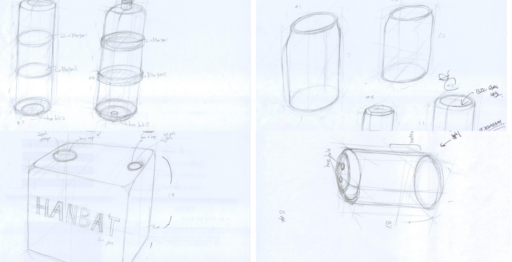

<div id="single-portfolio">
	<div id="portfolio-details" class="container">
		<a class="close-folio-item" href="#"><i class="fa fa-times"></i></a>
		
		<div class="row">
			<div class="col-sm-9">
				<div class="project-info">
					<h3>작품설계</h3>
					<p>팀원회의를 통해서 필터, 가스 포집통, 메탄가스발효통 아이디어 스케치를 완료했다.</p>
					<p>분리형으로 제작한 전작의 단점을 보완하고 유지보수가 간편하도록 초점을 맞추었다.</p>
				</div>
            </div>
		</div>
	</div>
</div>